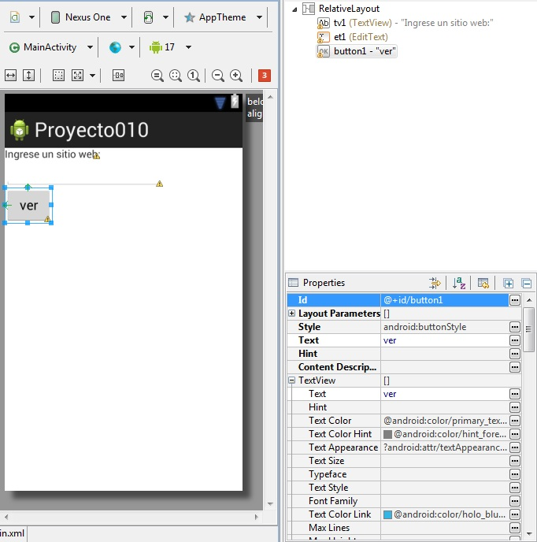
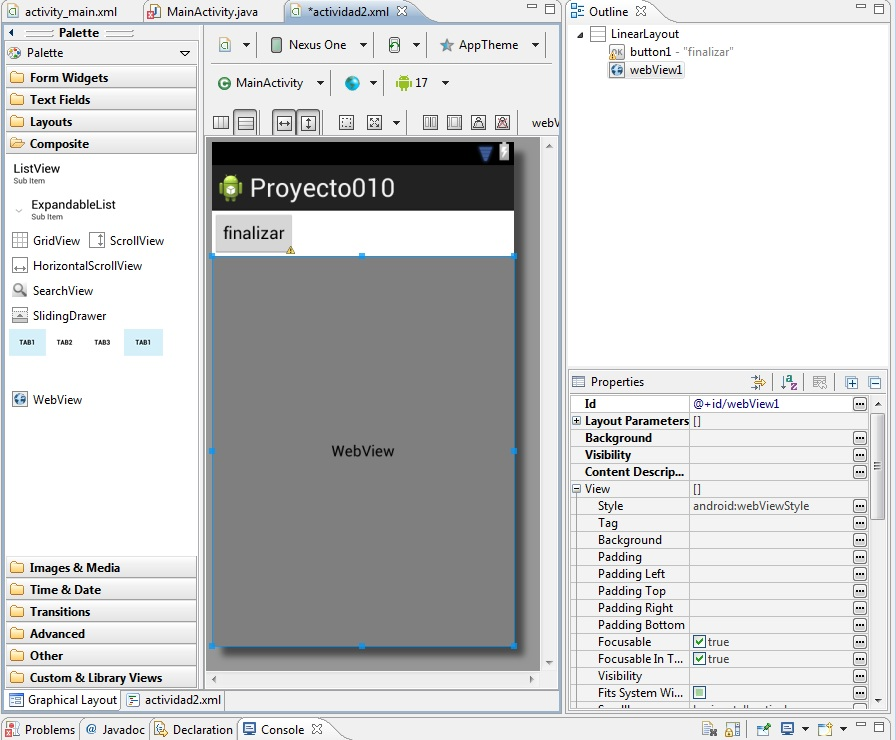
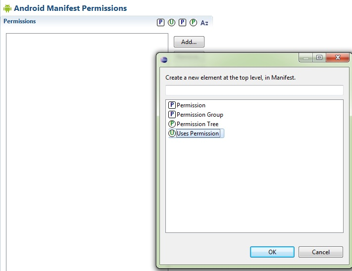
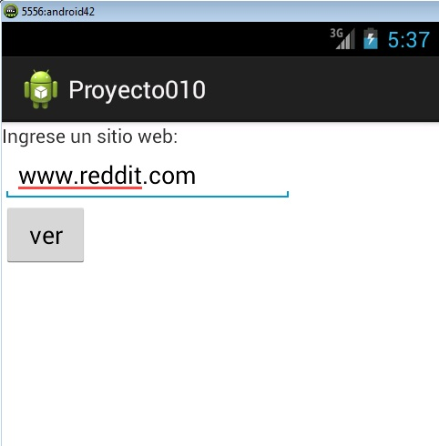

10 - Lanzar un segundo "Activity" y pasar parámetros.Ya se encuentra disponible el nuevo tutorial para aprender android con el nuevo entorno Android Studio propuesto por Google y que remplaza a Eclipse. |
Hemos visto en el concepto anterior que un programa puede tener más de una ventana representando cada ventana con una clase que hereda de Activity.
Una situación muy común es que la primer ventana necesite enviar datos a la segunda para que a partir de estos proceda a efectuar una acción.
Confeccionar un programa que solicite el ingrese de una dirección de un sitio web y seguidamente abrir una segunda ventana que muestre dicha página.
Para resolver este problema utilizaremos el control visual WebView que nos permite mostrar el contenido de un sitio web.
Crearemos un nuevo proyecto llamado proyecto010 y lo almacenaremos en el package name: com.androidya.proyecto010.
1 - Nuestro primer Activity tendrá la siguiente interfaz visual (ver controles y ID de los controles):

Tenemos un control de tipo TextView (tv1), otro de tipo EditText y finalmente otro de tipo Button (button1) debemos inicializar las propiedades de cada uno de estos tres objetos.
El código fuente de esta Activity es:
package com.androidya.proyecto010;
import android.app.Activity;
import android.content.Intent;
import android.os.Bundle;
import android.view.Menu;
import android.view.View;
import android.widget.EditText;
public class MainActivity extends Activity {
private EditText et1;
@Override
protected void onCreate(Bundle savedInstanceState) {
super.onCreate(savedInstanceState);
setContentView(R.layout.activity_main);
et1 = (EditText) findViewById(R.id.et1);
}
@Override
public boolean onCreateOptionsMenu(Menu menu) {
// Inflate the menu; this adds items to the action bar if it is present.
getMenuInflater().inflate(R.menu.activity_main, menu);
return true;
}
public void ejecutar(View view) {
Intent i = new Intent(this, Actividad2.class);
i.putExtra("direccion", et1.getText().toString());
startActivity(i);
}
}
Como podemos ver la diferencia con el concepto anterior es que llamamos al método putExtra de la clase Intent. Tiene dos parámetros de tipo String, en el primero indicamos el nombre del dato y en el segundo el valor del dato:
public void ejecutar(View view) {
Intent i = new Intent(this, Actividad2.class );
i.putExtra("direccion", et1.getText().toString());
startActivity(i);
}
La segunda interfaz visual (recordemos que debemos presionar el botón derecho sobre la carpeta layout y seleccionar la opción New -> Android XML File) la llamaremos actividad2.xml:
En esta interfaz disponemos primero un control de tipo Button (button1) y un objeto de la clase WebView (se encuentra en la pestaña "Composite") y lo dejamos con el ID por defecto llamado webView1
Tenemos que crear el archivo Java donde dispondremos la funcionalidad de la segunda ventana (Activity)
Creamos una nueva clase al proyecto desde el menú contextual(presionamos el botón derecho del mouse sobre el paquete com.androidya.proyecto010)
Al nombre de la clase la llamamos Actividad2 y debemos especificar que hereda de la clase android.app.Activity
Ahora tenemos que modificar el archivo Java generado agregando del método onCreate con esto:
package com.androidya.proyecto010;
import android.app.Activity;
import android.os.Bundle;
import android.view.View;
import android.webkit.WebView;
public class Actividad2 extends Activity {
private WebView webView1;
@Override
protected void onCreate(Bundle savedInstanceState) {
// TODO Auto-generated method stub
super.onCreate(savedInstanceState);
setContentView(R.layout.actividad2);
webView1 = (WebView) findViewById(R.id.webView1);
Bundle bundle = getIntent().getExtras();
webView1.loadUrl("http://" + bundle.getString("direccion"));
}
public void finalizar(View view) {
finish();
}
}
En esta clase definimos una variable de tipo Bundle y la inicializamos llamando al método getExtras() de la clase Intent (esto lo hacemos para recuperar el o los parámetros que envió la otra actividad (Activity)):
Bundle bundle=getIntent().getExtras();
webView1.loadUrl("http://"+bundle.getString("direccion"));
El método loadUrl de la clase WebView permite visualizar el contenido de un sitio web.
Otro paso fundamental es registrar el Activity en el archivo "AndroidManifest.xml" que se encuentra en la raiz principal del proyecto.
Seleccionamos el archivo y activamos la pestaña : "Application", presionamos el botón "add" y seleccionamos "Activity".
Por último seleccionamos en "Application Nodes" la actividad creada y definimos la propiedad Name con el nombre de la clase que la implementa (en nuestro caso se llama Actividad2)
Como nuestra aplicación debe acceder a internet debemos hacer otra configuración en el archivo "AndroidManifest.xml", debemos ir a la pestaña "Permissions" presionar el botón "Add" y seleccionar "Uses Permissions":
Luego fijar en la propiedad name el valor android.permission.INTERNET
Ahora nuestro programa debería estar funcionando completamente.
La primer ventana debería ser algo similar a esto:
La segunda ventana debería ser algo similar a esto otro:
Este proyecto lo puede descargar en un zip desde este enlace: proyecto010.zip